Es muss nicht immer Excel sein
Gerade bin ich sehr begeistert von einem neuen digitalen Tool. Das möchte ich Ihnen heute kurz vorstellen. Es füllt eine lange existierende Lücke in Ihrem elektronischen Werkzeugkasten – auch wenn Sie sich der vielleicht nicht so bewusst waren 😉
Aber zuerst ein wenig Kontext:
Überstrapazierte Werkzeuge
Bei den digitalen Werkzeugen scheint mir nach Email gleich Excel zu kommen. Email ist das zentrale Werkzeug für die Kommunikation im Büro, wenn ein persönliches Gespräch nicht sofort möglich ist. Und Excel ist das zentrale Werkzeug, wenn es um das Verwalten von Daten geht, die nicht reine Texte sind.
So ist das – aber das heißt nicht, dass das auch gut so ist. Im übertragenen Sinn gibt es im Office also nur Hammer und Bohrer und alle Heimwerkerprobleme müssen damit gelöst werden. Keine gute Strategie, oder? Da schaudert es den echten Handwerker.
Der Profi setzt für jeden Job das am besten passende Werkzeug ein! Manchmal mögen das Hammer oder Bohrer sein, in anderen Fällen Schraubenzieher, Zange, Säge, Stemmeisen usw. usf.
Email und Excel haben ihren Platz im Werkzeugkasten der Büroarbeit. Doch ihr Einsatzgebiet ist viel enger als es heute oft gelebt wird.
In der Anfangszeit des Internet vor 20+ Jahren gab es nur Email und Diskussionsforen, um online zu kommunizieren. Doch heute reicht die Palette von geteilten Notizen mit Kommentarfunktionen und Aufgabenlisten über Kanban-Bretter und Whiteboards und Wikis und Group-Chats bis zu CRM- und DMS-Systemen und Dropbox. Und täglich kommen weitere Tools dazu.
Damit will ich nicht sagen, Sie müssten all diese Tools beherrschen oder gar einsetzen. Soviel ist aber gewiss: In vielen Fällen würde die Arbeit im Office davon profitieren, die Werkzeugvielfalt etwas zu erhöhen, um die Kommunikation intern flüssiger zu machen.
Dasselbe gilt für Excel. Nicht jedes Datenverwaltungsproblem, für das nicht eine Speziallösung wie Buchhaltungssoftware oder Auftragsverwaltung im Einsatz ist, sollte mit Excel gelöst werden.
Excel-Dateien sind in vielen Büros der Dreh- und Angelpunkt, wenn es um die Kollaboration geht. Sie sind wie Infobretter auf dem Gang. Sie dienen der Urlaubsplanung, Adressverwaltung, Auslastungsübersicht, Angebotskalkulation, Aufgabenverwaltung, Umsatzkontrolle, Absatzsimulation usw. usf. Die Anwendungsfelder für Excel sind quasi unendlich.
Das ist ja einerseits schön. Man weiß sich zu helfen. Auch beim nächsten Datenverwaltungsproblem heißt es dann: Excel wird’s schon richten!
Andererseits entsteht dadurch auch einige Verschwendung. Denn Excel ist eben nicht für jedes Problem optimal geeignet. Und die zunehmende Zahl von Excel-Dateien will auch verwaltet werden, sonst entsteht weitere Verschwendung durch Suchzeiten und doppelte Arbeit.
Nutzen und Nachteile von Excel
Excel wurde erfunden, um Berechnungen und Simulationen durchzuführen. Es war als intelligenter Taschenrechner gedacht. Quasi ein Blatt, auf dem man etwas nicht nur notieren konnte (wie in Word), sondern auch mit einander verknüpfen. Diese Tabelle ist dafür ein Beispiel:
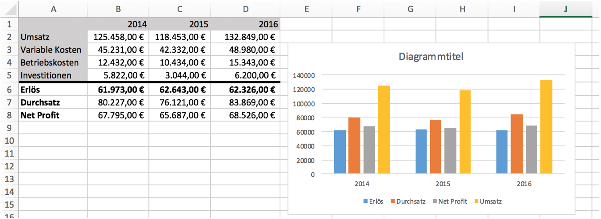
Und hier dieselben Daten noch einmal um 90° gedreht:
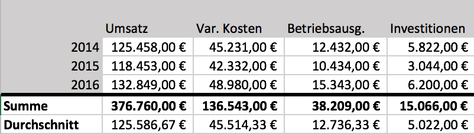
Excel ist da ganz flexibel. Sie bestimmen, wie Sie die Daten auf einem Blatt anordnen und Bezüge zwischen ihnen herstellen. Excel ist „einfach nur“ ein Hochleistungsnotizzettel 🙂
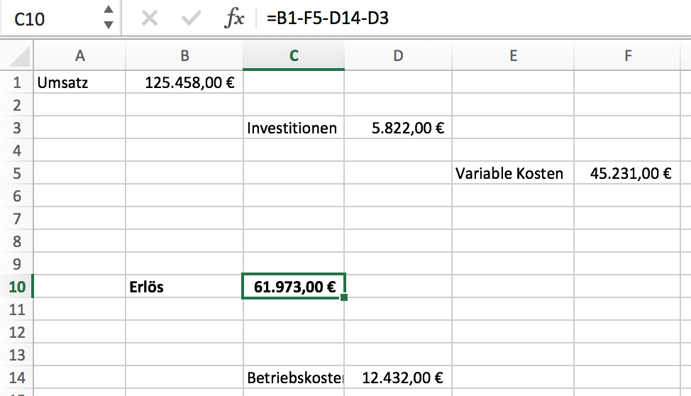
Indem Sie auf die einzelnen Werte mittels Koordinaten Bezug nehmen, können Sie sie zu Berechnungen zusammenführen. Das funktioniert sogar über Excel-Blätter hinweg. Wahnsinn, diese Freiheit, diese Möglichkeiten…
Und genau da liegt nun das Problem: die Möglichkeiten sind unendlich, deshalb ist es in vielen Fällen schwer, Excel angemessen einzusetzen. Das Potenzial von Excel leistet suboptimalem Gebrauch Vorschub.
Excel war für Berechnungen und Simulation gedacht – und ist heute vielfach für etwas ganz anderes im Einsatz: Datenverwaltung. Das funktioniert irgendwie, weil Excel so flexibel ist und eine Grundstruktur durch den tabellarischen Aufbau seiner Blätter nahelegt. Doch alsbald wird es schwierig. Denn Datenverwaltung ist eben etwas anderes als Berechnung und Simulation.
Wo hakt es denn mit Excel bei der Datenverwaltung?
- Excel bietet z.B. keine unterschiedlichen Sichten auf Daten. Alles ist immer eine Tabelle. Excel unterstützt keine Eingabeformulare.
- Excel ist dateibasiert und damit für die Kollaboration nur bedingt geeignet.
- Excel enthält nur wenige und pauschale Sicherungsmechnismen.
- In Excel kann man Daten in unterschiedlichen Tabellen nicht gut verknüpfen.
- Excel kennt keine Datenarten wie Zahl oder Datum und kann daher bei der Eingabe nicht unterstützen.
- Längere Texte in einer Excel-Zelle zu erfassen ist umständlich.
- Excel macht es nicht leicht, Übersichten zu generieren.
- Excel verfolgt die Änderungen an den Daten nicht, so dass Fehler nicht leicht rückgängig gemacht werden können.
- Excel erlaubt keine Diskussion zu einzelnen Datensätzen.
- Mit Excel kann man auf mobilen Geräten nur schwer Daten erfassen.
- Excel gestattet keine Anhänge an Datensätze.
Das sind eine Menge Nachteile von Excel, oder? Die mögen Ihnen im Alltag nicht so auffallen, weil Sie Excel nicht anders kennen. Doch die Behinderung durch diese Lücken bei der Datenverwaltung ist real. Wenn Sie es einmal erlebt haben, dass es auch anders gehen kann… dann wollen Sie nicht mehr zurück zu Excel 🙂
Airtable: Echte Datenverwaltung in der Cloud
Excel wird so überstrapaziert, weil es eine Lücke gibt im Phalanx der digitalen Werkzeuge. Diese Lücke schließt allerdings nun aus meiner Sicht Airtable.
Airtable ist eine online Datenbank. Sozusagen das dBase oder Access oder FileMaker der heutigen Zeit. Schon lange habe ich ein ähnliches Tool von „den Großen“ wie Google oder Microsoft erwartet… doch dort konzentrierte man sich auf das Bewährte: Dokumente. Google Docs und Microsoft Office enthalten Werkzeuge für die Textverarbeitung, Tabellenkalkulation und Präsentation. Echte Datenverwaltung für den Endanwender? Fehlanzeige. Schade – oder vielleicht zum Glück. Denn nun zieht an ihnen ein kleiner, neuer Anbieter vorbei. So, wie es schon Evernote und Trello und Wunderlist vorgemacht haben für die Notizenverwaltung, ad hoc Prozesse und ToDo-Listen, definiert Airtable einen Aspekt der Wissensarbeit neu.
Airtable ist kompromisslos. Es konzentriert sich nur auf genau eines: die Verwaltung von Daten in Tabellen. Hier eines von vielen Beispielen, die Airtable zur Übung zur Verfügung stellt, eine Auftragsverwaltung. Achten Sie dabei nicht so sehr auf den Inhalt, sondern auf die Form, d.h. was Airtable kann:
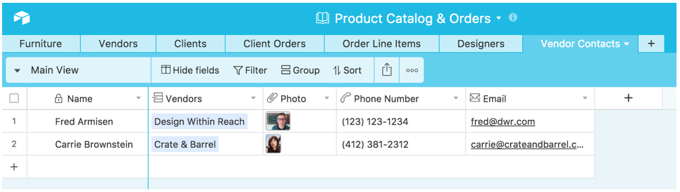
Tabellen enthalten Datensätze, hier sind es zwei für Ansprechpartner bei Möbelanbietern. Datensätze stehen immer untereinander in Tabellen. Die Daten, aus denen sie bestehen, sind horizontal in Spalten notiert, z.B. der Name des Ansprechpartners oder dessen Telefonnummer.
So weit ist das noch nicht spektakulär. Das können Sie mit Excel auch. Aber schauen Sie genau hin: eine Spalte enthält keine textuellen Daten, sondern ein Bild! Das gehört genauso zum Datensatz wie die Email-Adresse. Was horizontal in einem Datensatz steht, kann nicht „verrutschen“, es bleibt immer zusammen. In Excel haben Sie diese Garantie nicht. Excel kennt solche Zusammenhänge nicht. Mit Airtable ist es also viel leichter, Datenkonsistenz herzustellen.
Dazu gehört auch die Zuordnung der Kontakte zu einem Anbieter. Die Angaben in Spalte „Vendors“ enthält nicht einfach einen Namen, sondern stellt einen Verweis dar auf eine andere Tabelle:
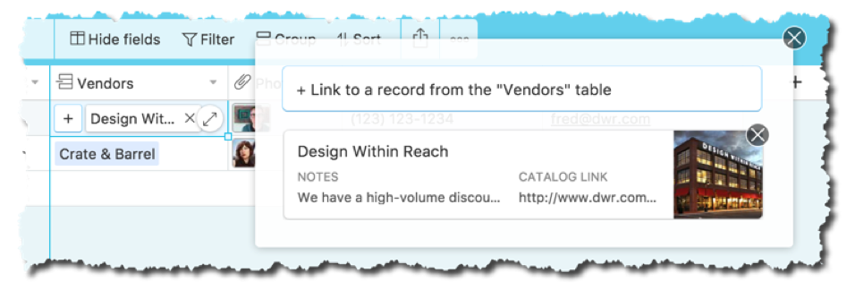
Ich habe auf den Verweis geklickt und Airtable zeigt mir Details zum verbundenen Datensatz. Dessen eigentliche Tabelle sieht so aus:
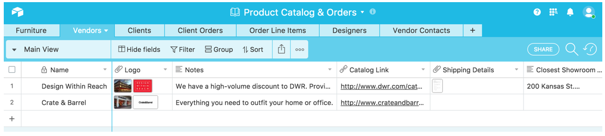
Auch dort sehen Sie wieder Spalten, die keinen Text enthalten, sondern Dokumente (z.B. Bild, PDF), mal eines, mal mehrere.
Wenn ich diese Tabelle nach rechts scrolle, findet sich dort auch der umgekehrte Bezug zum Kontakt (Spalte „Sales Contact“). Darüber hinaus ist der Anbieter allerdings auch noch verbunden mit vielen Produkten (Spalte „Furniture“).
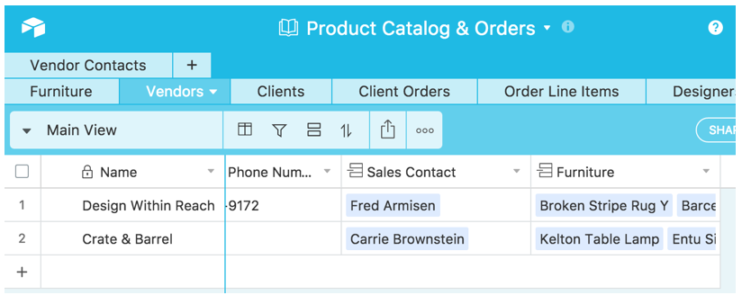
Das ist genial! Denn so kann man Daten einmal hinterlegen und in vielen Zusammenhängen wiederverwenden. Die Produkte tauchen nämlich nicht nur bei den Anbietern auf, sondern auch in den Positionen einer Bestellung (Spalte „Furniture Item“):
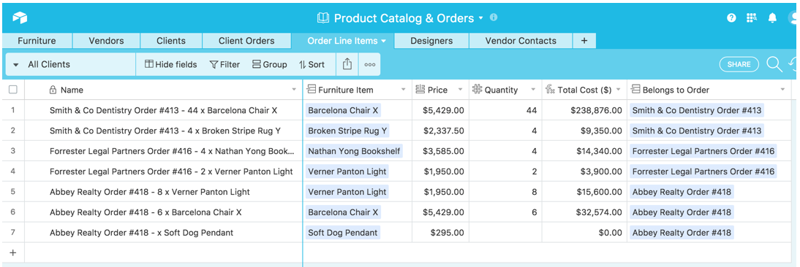
Tabellen liegen bei Airtable also nicht nur einfach nebeneinander, sondern bilden oft ein Netzwerk. Hier ein Ausschnitt aus der Beispieldatenbank:
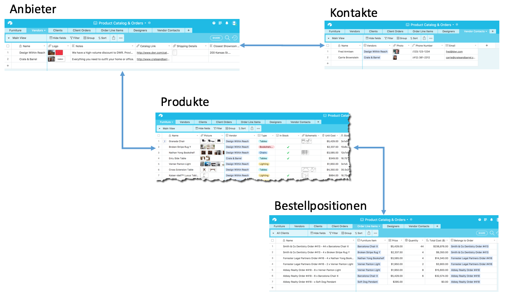
Für die Profis unter Ihnen: Airtable ist eine relationale Datenbank (RDBMS) – allerdings ohne die übliche Kompliziertheit. Airtable macht einen guten Job, den Kern des Datenhaltungsparadigmas zu erhalten und dennoch den Umgang einfach für EDV-Laien zu gestalten.
In der Möbeltabelle finden sich weitere Besonderheiten:
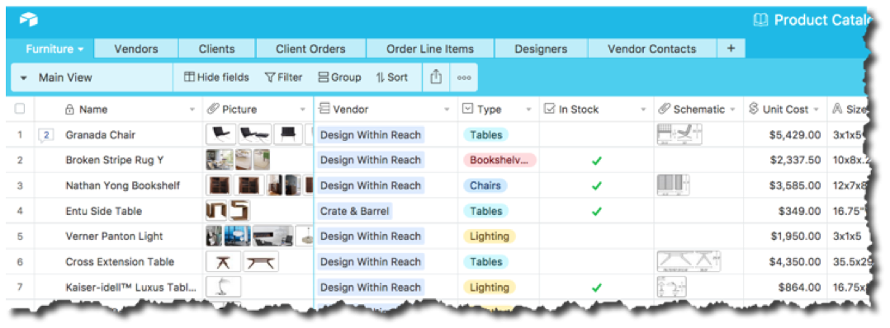
Nicht nur sind dort jedem Datensatz wieder viele Dokumente zugeordnet, sie enthalten auch ein Protokoll ihrer Änderungen. Die Daten sind nicht nur einfach, wie sie sind, sondern haben eine Geschichte. Das macht die Nachvollziehbarkeit der Entstehung von Daten möglich; das ist umso wichtiger, je mehr sie ein Gemeinschaftsprodukt vieler im Office sind.
Sehen Sie die kleine „2“ neben „Granada Chair“? Sie zeigt an, das es zwei Kommentare zu dem Datensatz gibt. Wenn ich „den Datensatz öffne“, sehe ich das Änderungsprotokoll und kann mit Kollegen via Kommentar kommunizieren:
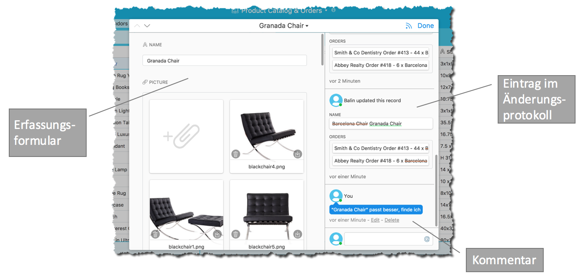
Außerdem kann ich den Datensatz nun in einem Formular bearbeiten, in dem die Felder vertikal angeordnet sind. Das ist gerade für eine Ersterfassung oft hilfreich, z.B. auf einem Smartphone:
Die Daten dort in Zeilen nebeneinander zu betrachten, wäre schwierig. Aber mit einem Formular, so einfach es auch gestrickt sein mag in seinem automatischen Layout, ist Erfassung oder Überarbeitung kein Problem.
Oder hier die Erfassung der Möbelstück-Kategorie. Wieder wird die Eingabe einfacher durch eine Liste zur Auswahl des passenden Wertes:
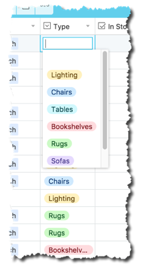
Airtable kennt eben nicht nur Text als Datenwert, sondern unterscheidet explizit zwischen Text, Zahl, Datum, Email-Adresse, Dokument und einigem anderem, z.B. auch expliziten Vorgaben. Ganz zu schweigen von berechneten Daten.
Ach, ich könnte noch von vielen spannenden Features in Airtable berichten. Doch das würde schon sehr ins Detail gehen. Hier sollen Sie ja lediglich einen Überblick bekommen. Ich möchte Ihnen den Mund wässrig machen 😉
Deshalb zum Abschluss nur noch zwei Beispiele für die Möglichkeiten der Darstellung von Daten.
Einerseits können Sie Datensätze auch zusammenfassen in einfachen Berichten. Hier eine gruppierende Darstellung des Möbelangebots:
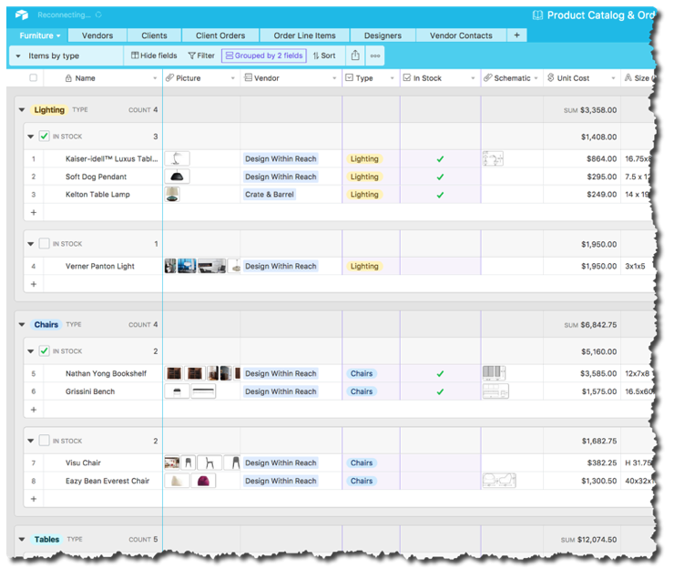
Zusammengefasst sind die Produkte nach ihrer Kategorie und nach ihrer Verfügbarkeit (vorrätig oder nicht). Gleichzeitig werden auch Angaben aggregiert, z.B. die Anzahl bestimmt oder eine Summe über die Gruppe berechnet. Das ist sehr hilfreich, um bei größeren Datenmengen den Überblick zu behalten.
Welche Daten gezeigt werden, bestimmen natürlich Sie. Sie können vertikal einschränken, d.h. einen Filter über die Datensätze legen und z.B. nur Produkte eines bestimmten Anbieters listen. Oder sie schränken horizontal ein, indem Sie die Ausgabe auf ganz bestimmte Spalten konzentrieren. Alles ist möglich.
But wait, there’s more!
Airtable kann nicht nur Daten in Tabellenzeilen darstellen. Das ist zwar die Voreinstellung als so genannter Grid-View:
Doch wie Sie sehen, gibt es weitere Sichtweisen, die Sie auf Ihre Daten einnehmen können. Hier ein Gallery-View für die Produkte:
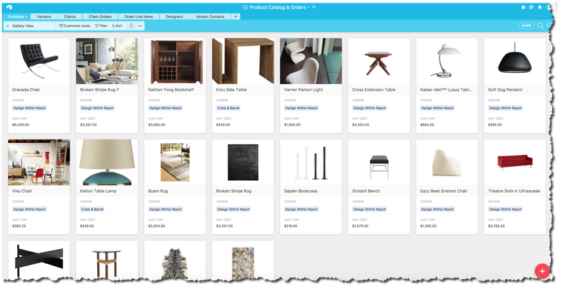
Versuchen Sie das ‚mal mit Excel… Keine Chance. Allemal nicht im Wechsel auf Knopfdruck. Dafür ist Excel schlicht nicht gemacht.
Zusammenfassung
Es fällt mir schwer, zum Ende zu kommen. Airtable ist einfach ein so cooles Tool. Als Office Raider bin ich schwer begeistert 🙂
Aber es hilft nichts. Zu viel Information auf einmal ist auch nicht gut. Nehmen Sie die Bilder hier als Impuls, der Sie in Ihrer Excel-Nutzung ein wenig erschüttern soll. Excel ist auch wertvoll – wenn die Aufgabenstellung passt. Häufig ist das jedoch nicht der Fall.
Doch nun sind die Zeiten vorbei, in denen Excel quasi alternativlos war, wenn Sie „eben mal schnell“ ein paar Daten verwalten wollten. Airtable ist die bessere Wahl, wenn es darum geht, tabellarische Daten zu erfassen, zu verwalten, in unterschiedlichen Sichten darzustellen und zu verknüpfen.
Einstweilen ist Airtable für den Einstieg sogar kostenlos. Ein Konto ist schnell angelegt. Probieren Sie es doch einmal aus. Ich werde hier auch wieder darüber berichten. Es besteht, glaube ich, einiger Erklärungsbedarf, damit Airtable für Sie ein genauso selbstverständliches Werkzeug wird, wie Excel es bisher war.
PS: Auch wenn ich begeistert bin, einen (kleinen) Nachteil von Airtable will ich Ihnen nicht verschweigen: Airtable braucht eine gute Verbindung ins Internet nicht nur auf Smartphone und iPad, sondern auch auf dem Desktop. Die Daten werden wie bei Google Docs komplett „in der Cloud“ gespeichert.
Der eine oder andere mag das für ein Sicherheitsrisiko halten, doch ich meine vor allem, dass das die Mobilität beim Arbeiten einschränkt. Im Zug im Tunnel zwischen Göttingen und Kassel ist es nichts mit der schönen Airtable Datenverwaltung 🙁
Andererseits… der Features und Vorteile von Airtable sind so viele, dass ich diesen Nachteil verschmerzen kann. Im Büro und in der Stadt ist diese Einschränkung nicht spürbar.
Weitere Artikel

Regeln für KI im Office
ChatGPT & Co haben sich schnell in die Herzen und Alltag von vielen Menschen im Berufs- und Privatleben gespielt. Diese neuen Werkzeuge eröffnen uns viele Chancen, nicht nur effizienter zu werden, sondern auch kreativer. Aber …

KI als Copilot für die Assistenz
KI in Form von ChatGPT & Co sind hervorragende neue Werkzeuge im Office-Alltag, um produktiver und ja, auch kreativer, zu werden. Neugier statt Angst ist angezeigt im Umgang mit diesen Werkzeugen, die wie andere Werkzeuge auch …